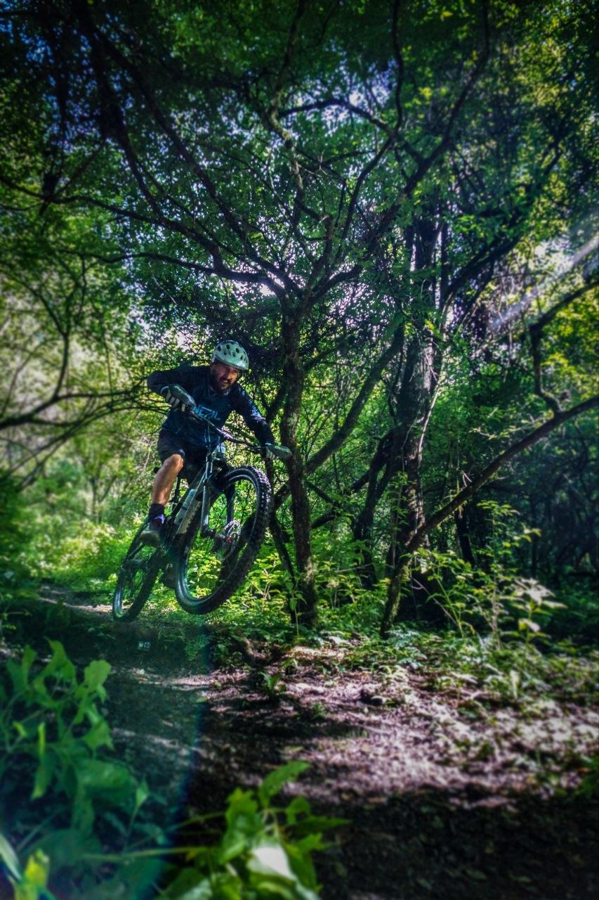
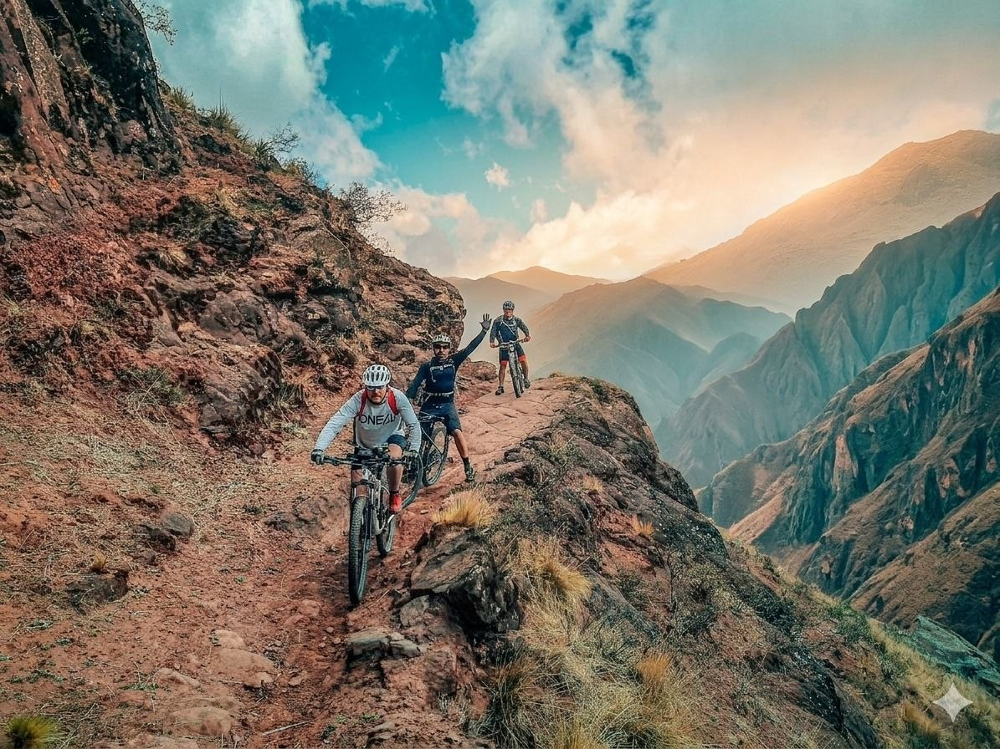
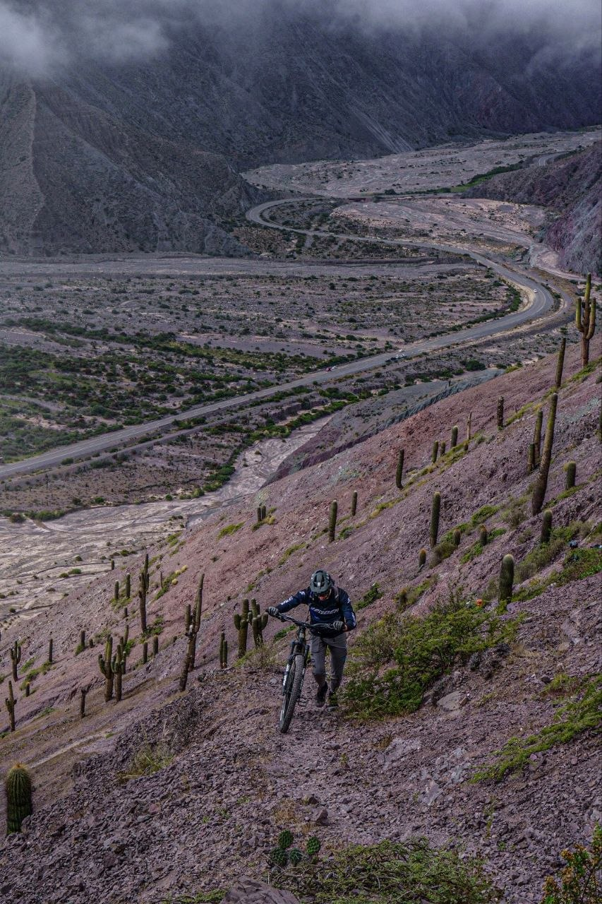

Senderos Destacados
Descubrí las mejores rutas para MTB en Salta

Circuito 1: Elefante - Los Hurones
Ascenso a Cerro Elefante (1.926m) y descenso por Sendero de Los Hurones. Selva de yunga densa, fauna autóctona (zorros, hurones, cóndores), y vistas panorámicas del Valle de Lerma. Opción de asado en el rancho de Don Juan en la cima.

Circuito 2: Cerro Negro - Corralito
Descenso épico desde casi 4.000m de puna hasta la selva de Corralito. De la puna extrema (abierta, seca, silenciosa) a la yunga cerrada y húmeda sin transición. ~3.000m negativos en senderos reales, sin bike park.

Circuito 3: Cerro Redondo
Acceso a la precordillera profunda. Salida desde Salta por Ruta 51, paso por Campo Quijano (Portal de los Andes), llegada a Incamayo. Ascenso exigente a 3.463m con vistas 360° de cordillera, y descenso ancestral por senderos marcados por generaciones.
Niveles de Dificultad
Conocé el sistema de clasificación de senderos
Principiante
- Senderos amplios y marcados
- Poca inclinación
- Sin obstáculos técnicos
- Ideal para familias
Intermedio
- Terreno variado
- Subidas moderadas
- Algunos obstáculos
- Experiencia básica requerida
Avanzado
- Senderos técnicos
- Subidas pronunciadas
- Obstáculos frecuentes
- Física y técnica necesarias
Experto
- Terreno extremo
- Descensos vertiginosos
- Navegación compleja
- Solo expertos
Galería de Circuitos
Fotos reales de cada circuito - Sin filtros, pura aventura
● Circuito 1: Elefante - Los Hurones (Selva de Yunga)
● Circuito 2: Cerro Negro - Corralito (Puna ~4.000m)
● Circuito 3: Cerro Redondo (Precordillera)
Lo Que Dicen Nuestros Riders
Experiencias reales de nuestra comunidad de mountain bike
"Los senderos de Yungas MTB Salta son simplemente increíbles. Cada ruta tiene su propio carácter y desafío. ¡Recomendado 100% para cualquiera que ame el mountain bike!"

Carlos Mendoza
Rider Experto • Salta
"Como principiante, estaba nervioso pero los guías de Yungas MTB hicieron mi primera experiencia segura y divertida. Ahora no puedo esperar para mi próxima salida."

Ana López
Principiante • Jujuy
"La variedad de terrenos es asombrosa. Desde senderos técnicos en la montaña hasta rutas panorámicas en los valles, siempre hay algo nuevo para descubrir."

Miguel Torres
Rider Intermedio • Tucumán
¿Listo para tu Próxima Aventura?
Únete a nuestra comunidad de riders y recibe información exclusiva sobre nuevos senderos, eventos y tips de mountain bike.
Contáctanos
¿Tenés preguntas o querés organizar una salida grupal? Estamos aquí para ayudar.
Ubicación
Salta, Argentina
info@yungasmtb.com.ar
Teléfono
+54 387 123-4567
Horarios
Lunes a Domingo: 8:00 - 18:00